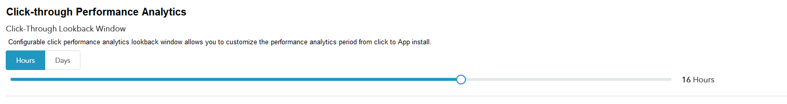

Ad Performance Analytics Platform
1. Overview
The Ad Performance Analytics platform helps advertisers to pinpoint their targeting, optimize their UA marketing and boost ROI.
2. What is Ad Performance Analytics?
- The Ad Performance Analytics is a way to measure the App installation or post-installation events caused by marketing activities, which plays a key role in optimizing the marketing performance for user acquisition, engagement and retargeting campaigns;
- The purpose of Ad Performance Analytics is to evaluate the impact of each Ad impression on the final decision taken by mobile users and to help advertisers improve their marketing strategies;
- Through the Ad Performance Analysis, advertisers can clearly understand the factors that influence user behavior and decision-making, thereby optimizing spending on different channels for user conversions;
- Understanding the conversion capabilities of different channels, including: paid and natural search, mail, advertising, social media, etc.
3. All Participants in Mobile Marketing Ecosystem
- Google Play, iTunes, Facebook and Twitter, etc.;
- Mobile tracking companies.
These participants count installs and events differently based on their own mobile click performance analysis models.
4. What is a App Installation?
In Adsforce's Ad Performance Analytics model, installation events are only logged after the user downloads and launches the App.
For the advertising platform, installation events are only recorded after the App is used; for the App store, installation events are recorded after being downloaded.
5. Ad Performance Analytics Model
Ad Performance Analytics model includes: Click-through and Impression Performance Analytics.
| Click-Through Performance Analytics |
|---|
| Most App installation events come from user clicks on ads: banners, videos, interstitials etc. The default duration of the click lookback window in Adsforce > Integrated Partner is 7 days. Installs that occurred during the lookback window duration are considered as non-organic and are attributed to media sources. Installs that occurred out of the lookback window duration are considered as organic installs.  Adsforce recommends using the 7-day click lookback window, which is the industry standard. However, you can customize the time period to 1-30 days based on the agreement you have with your media sources. For example, Facebook uses the 28-day click-through lookback window, Twitter uses the 14-day and Google Ads uses the 30-day. You can match Adsforce’s click-through lookback window to any of these values. |
| Impression Performance Analytics |
|---|
Impression Performance Analytics gives marketers visibility into when and where ads are being served through Impression tracking.  |
| Performance Analytics Model | Performance Analytics Method | Clicks Lookback Window | |
|---|---|---|---|
| Range | Recommended (default) | ||
| Click-Through (All Integrated Partners) | Referrer, ID Matching | 1 – 30 Days | 7 Days |
| Click-Through (All Integrated Partners) | Fingerprinting | Fixed | 1 Day |
| Impression（Selected media sources） | ID Matching | 1h-7 Days | 1 Day |
6. Ad Performance Analytics Methods
Ad Performance Analytics methods are the rules, used to determine which media source is the conversion path. For example, last click Ad Performance Analytics based on the media source that last clicked.
Adsforce uses a variety of Performance Analytics methods, as following：
| Performance Analytics | Android(google Play) | Android(out of Store) | IOS |
|---|---|---|---|
| Referrer | √ | √ | √ |
| Device ID Matching | √ | √ | √ |
| Fingerprinting | √ | √ | √ |
The click-through Performance Analytics based on fingerprint recognition lookback window is limited to a maximum of 24 hours on iOS and much less on Android to maintain a high level of accuracy.
The method of the Performance Analytics model (click-though or impression) and the conversion type (install or in-app event) depends on the media source and the store (Google Play Store, iOS App Store or Amazon).
7. Advanced Performance Analytics Topics
| Assisted Installs |
|---|
| Adsforce fully attributes only one media source per install, usually according to the last click or the last impression (if there were no clicks). Assisted Installs (AKA multi-touch Ad Performance Analytics) are installs where the Media-Source / Campaign did not have the last click, but did click the user before the install and this took place within their Ad Performance Analytics lookback window. The assisting networks get credit as contributors to the install on Adsforce's dashboard and raw data. |